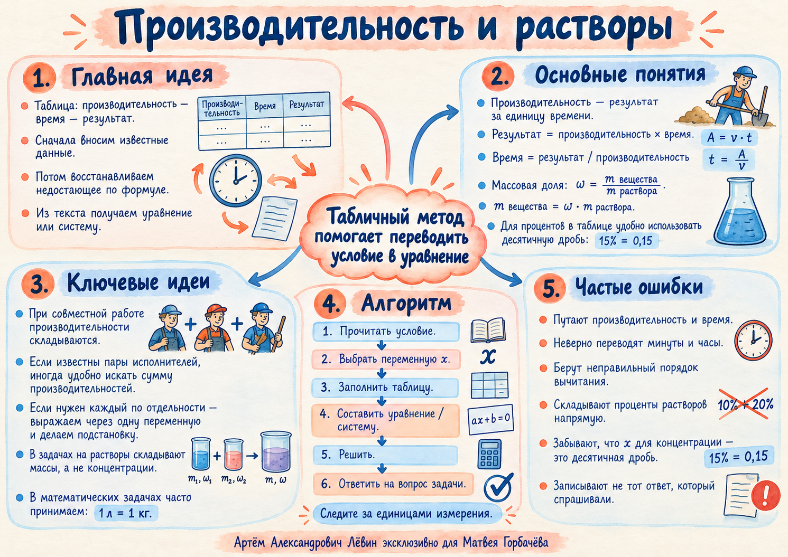

Трубы: одна медленнее другой
Первая труба пропускает x л/мин, вторая — x + 12. Первая наполняет бак 160 л на 12 минут дольше.
x > 0. После решения: x = 8 л/мин. Отрицательный корень не имеет физического смысла.
Математический практикум · 08 октября 2026
Одна идея для двух типов текстовых задач: найдите величину, которую можно сложить или приравнять, затем переведите условие в уравнение.
Сначала заполните то, что известно из условия. Недостающий столбец вычислите по формуле. Затем запишите словами, какие результаты равны, складываются или отличаются на заданное число.
| Тип | Величина 1 | Величина 2 | Результат |
|---|---|---|---|
| Работа | Производительность p | Время t | A = pt |
| Растворы | Масса m | Доля вещества c | q = mc |
Если целый заказ принять за единицу, исполнитель, который один выполняет его за T часов, за час делает 1/T заказа.
Первый мастер за час выполняет 1/3 заказа, второй — 1/6. Вместе за час они сделают 1/2 заказа.
Весь заказ займёт 2 часа.
Проверьте это непосредственно в модели совместной работы: изменяйте время мастеров и наблюдайте результат.
Петя отвечает на 6 вопросов в час, Ваня — на 7. Петя завершил одинаковый тест на 20 минут позже. Если вопросов x, то время Пети x/6, Вани x/7.
20 минут обязательно переведите в часы. Ответ: 14 вопросов.
Когда даны результаты трёх пар, сумма трёх уравнений содержит каждую личную производительность дважды.
Игорь и Паша выполняют заказ за 3 часа, Паша и Володя — за 6 часов, Володя и Игорь — за 4 часа. Пусть их производительности a, b и c.
Для отдельной производительности используйте половину разности сумм пар: a = ((a+b)+(a+c)−(b+c))/2.
Формула остаётся прежней, но в задаче появляется связь между временами или несколько последовательных этапов.
Первая труба пропускает x л/мин, вторая — x + 12. Первая наполняет бак 160 л на 12 минут дольше.
x > 0. После решения: x = 8 л/мин. Отрицательный корень не имеет физического смысла.
16 и 25 работников начали два одинаковых заказа. Через 7 дней 8 человек перешли из второй бригады в первую.
После перехода численность: 24 и 17. Если p — производительность работника, t — дни после перехода:
Получаем t = 9 дней. Полная длительность: 7 + 9 = 16 дней.
В задаче с несколькими этапами t обычно обозначает время после изменения. Сверяйте ответ с вопросом: требуется полное время или только второй этап?
Массовая доля c — отношение массы растворённого вещества q к массе всего раствора m. При смешивании растворов одного вещества без потерь складываются массы и количества вещества.
| Раствор | Масса | Доля | Вещество |
|---|---|---|---|
| Первый | 4 | 0,15 | 0,6 |
| Второй | 6 | 0,25 | 1,5 |
| Смесь | 10 | 0,21 | 2,1 |
c = (0,6 + 1,5) / 10 = 0,21 = 21%. При равных массах 15%-го и 19%-го растворов получится 17%.
В лаборатории растворов меняйте массы и доли двух компонентов, добавляйте воду и проверяйте, когда работает среднее арифметическое процентов.
Формула относится к массам. Чтобы использовать объёмы, нужна информация о плотности либо явное допущение об одинаковых плотностях.
Чистая вода: c = 0. При добавлении воды растворённого вещества столько же, но концентрация снижается.
Для каждой задачи составьте таблицу, уравнение и оформите решение. Ответы открываются только по Вашему запросу.
1. 3 ч; 1/T = 1/4 + 1/12.
2. 12 вопросов; x/8 − x/10 = 18/60.
3. 3 ч 12 мин; 1/T = 5/16.
4. 6 ч, 12 ч, 12 ч.
5. 10 л/мин; 150/x − 150/(x+5) = 5.
6. 15 дней; 6·14 + 19t = 6·20 + 15t.
7. 24%; (3·0,10 + 7·0,30)/10.
8. 22%.
9. 4 кг; 8·0,30 = (8+x)·0,20.
10. 6 кг 10%-го и 12 кг 25%-го.
Схема помогает быстро восстановить методы перед самостоятельной работой.
